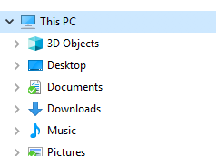
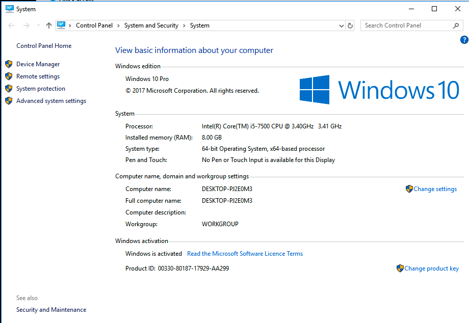
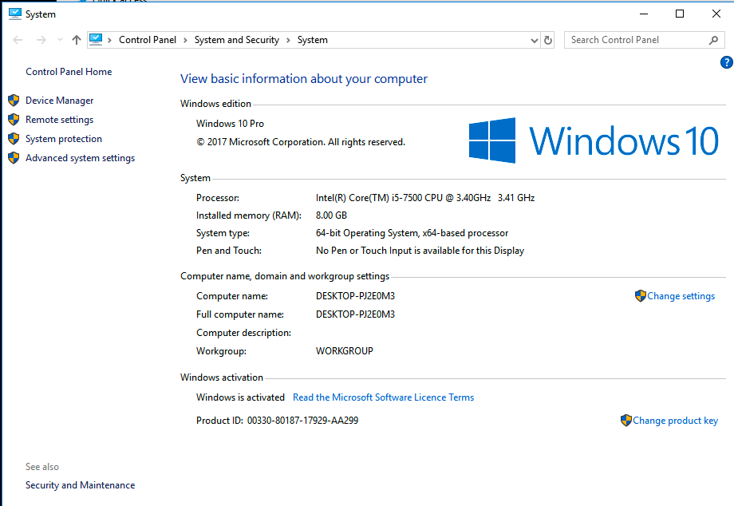
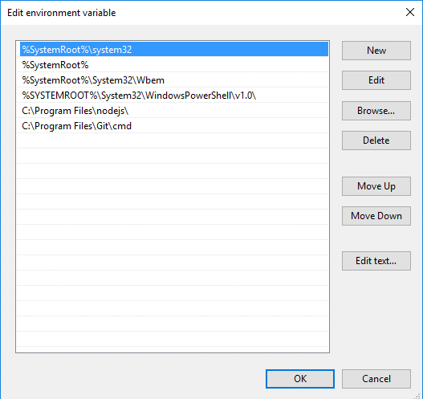
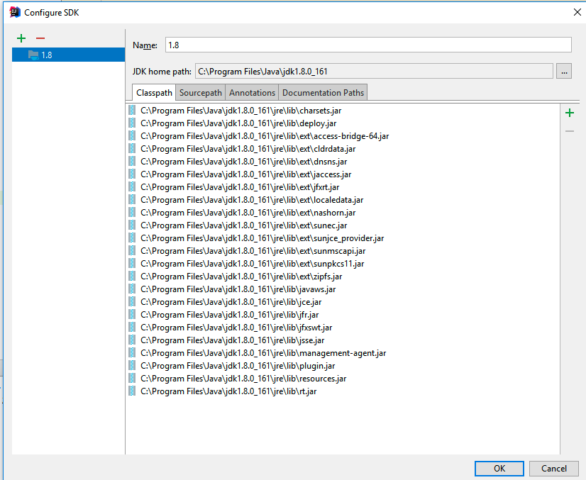

Objectives
Install and test Git + the Play Framework (Note: the video shows java + play revisions a little behind your current installation)
Install Git
You may have already installed this in a previous lab. If the installation succeeded, then verify the version. Do this by opening a shell (command prompt on Windows) and enter the following:
git --versionThe system might respond with something like this:
git version 2.16.1.windows.4To install git for your platform:
Accept all the default options if they are presented (usually it is just Windows that offers options).
Installing and Running Play
If you are running a Mac, skip to the step 03.
Windows
Visit the following site:
In particular, visit the download page:
On the this page, select and download play-1-5.2.zip (the version number is very important)
Unzip to somewhere on your PC - a good location might be:
C:\devOnce you have unzipped it, the folder might look like this:
In the above, the play archive has been downloaded and expanded in c:\dev
We need to now add the play folder to the system path - which will enable us to run the play command from a command prompt.
Windows
For Windows, you need to do the following: Locate the "This PC" icon in Explorer:

Right click on this and select 'Properties':
 

Select 'Advanced System Settings' on the left:

Select 'Environment Variables':
Under "System Variables" (the bottom list), locate the 'Path' entry and select Edit. Your system will most likely look a little different from the one shown below:

With this view open, press New - add a new entry to this list:
This new entry should be the path where play is installed. This could be C:\dev\play-1.5.2 as in the above example.
NB: DO NOT DELETE ANY OF THE CURRENT VALUES OF THE PATH!
Press "Ok" all the way back and rerun the command prompt (close the one already open).
To test, just type "play" from a command prompt you should see something like this:
~ _ _
~ _ __ | | __ _ _ _| |
~ | '_ \| |/ _' | || |_|
~ | __/|_|\____|\__ (_)
~ |_| |__/
~
~ play! 1.5.2, http://www.playframework.org
~
~ Usage: play cmd [app_path] [--options]
~
~ with, new Create a new application
~ run Run the application in the current shell
~ help Show play helpOr, if you did not manage to get the play folder on the path, then this command here should work (if you used the recommended folder structure)
C:\dev\play1-1.5.2\playHowever, it is best to ensure that the play command is on the system path.
Setting the Path on a Mac
The Mac is completely different - but has an identical PATH mechanism that needs to be adjusted. This path can be initialised in a file called .bash_profile in the user home folder.
Any file starting with a . is by default hidden, so the first step is to reveal all of these files:
The simplest way of doing this is the enter these commands:
CMD + SHIFT + .Try the above command while your finder is observing your home folder. For example - before revealing hidden files:

... and after revealing hidden files:
Hidden files are displayed in a greyed out font shown above.
One of the revealed files will be may be:
.bash_profile
If the file does not exist, the create it.
Now edit this file, and append the new folder (containing the expanded play archive) onto the end if the PATH sequence:
PATH=$PATH:$HOME/bin:/usr/local/bin:$HOME/dev/play-1.5.2
export PATHIf you do not have any .bash_profile file, then you can create one to look like the extract above.
All of the above assumes you extracted the play archive into the dev folder in your home folder.
Create a Play Project
Back in the command line, change to a directory where you keep your web development projects and enter:
play new playdemoYou should get:
~ _ _
~ _ __ | | __ _ _ _| |
~ | '_ \| |/ _' | || |_|
~ | __/|_|\____|\__ (_)
~ |_| |__/
~
~ play! 1.5.2, http://www.playframework.org
~
~ The new application will be created in c:\dev\playdemo
~ What is the application name? [playdemo]Press return when prompted for the name to accept the default (playdemo)
~
~ OK, the application is created.
~ Start it with : play run playdemo
~ Have fun!
~Explore the generated folder - called 'playdemo'. It should contain these folders:
- app
- conf
- documentation
- lib
- modules
- public
- test
Explore the contents of the app, conf and public folders. Use Sublime to this this (for the moment).
Running a Play Application
Back in the shell, from inside the playdemo folder, type the following command:
play runPlay will respond with something like this:
~ _ _
~ _ __ | | __ _ _ _| |
~ | '_ \| |/ _' | || |_|
~ | __/|_|\____|\__ (_)
~ |_| |__/
~
~ play! 1.5.2, https://www.playframework.com
~
~ Ctrl+C to stop
~
~ using java version "1.8.0_201"
Listening for transport dt_socket at address: 8000
09:41:27,910 INFO ~ Starting /Users/edeleastar/dev/playdemo
:: loading settings :: url = jar:file:/Users/edeleastar/dev/play-1.5.2/framework/lib/ivy-2.4.0.jar!/org/apache/ivy/core/settings/ivysettings.xml
09:41:28,327 INFO ~ Module docviewer is available (/Users/edeleastar/dev/play-1.5.2/modules/docviewer)
09:41:28,721 WARN ~ You're running Play! in DEV mode
09:41:28,764 INFO ~ Listening for HTTP on port 9000 (Waiting a first request to start) ...
~ Server is up and runningOn Windows, you may get a dialog from the firewall, asking for permission to run, which you should agree to.

Now run the browser, and navigate to:
you should see something like this:

Also notice that a log message will appear in the command window indicating that the app has started:
16:30:58,912 INFO ~ Application 'playdemo' is now started !To stop the application, press "Control+C" in the command prompt. If you refresh the browser window, then you should now get an error
Start the app again by typing 'play run' as above. Verify that the app has started by browsing/refreshing to:
Try this a few times to get used to starting/stopping the application
Import into Idea
Now, making sure you are still in the playdemo folder, run this command:
play idealizeThe system will respond with:
_ _
~ _ __ | | __ _ _ _| |
~ | '_ \| |/ _' | || |_|
~ | __/|_|\____|\__ (_)
~ |_| |__/
~
~ play! 1.5.2, https://www.playframework.com
~
~ OK, the application is ready for Intellij Idea
~ Use File, Open Project... to open "playdemo.ipr"
~Now, launch IntelliJ Idea, and select Open:
Navigate to the playdemo folder, and select the project folder to import:

Be sure to select the 'playdemo' only as shown above.
Once opened by Idea, it might look like this:

You may need to press 'project' icon on the left margin - and then expand the project window to reveal the project details. See if you can navigate to and open the Application class:

If it all works as shown above - then you are up and running and you can skip the rest of this step.
However, if first time you run this - there may be an error visible on the title bar as Project SDK is not defined

Press the Setup SDK button:

Press Configure:

Press +:

Select JDK

Navigate to the appropriate folders on your system. The JDK for java 8 is shown above. 9 and 10 may also be fine, but not 11.

Press OK
This should remove the error - and the project should now be correctly configured.
Exercises
Exercise 1:
Using steps 04 and 05, create another project - called playdemo1 and import into Idea. Experiment with having 2 project open in the IDE simultaneously.